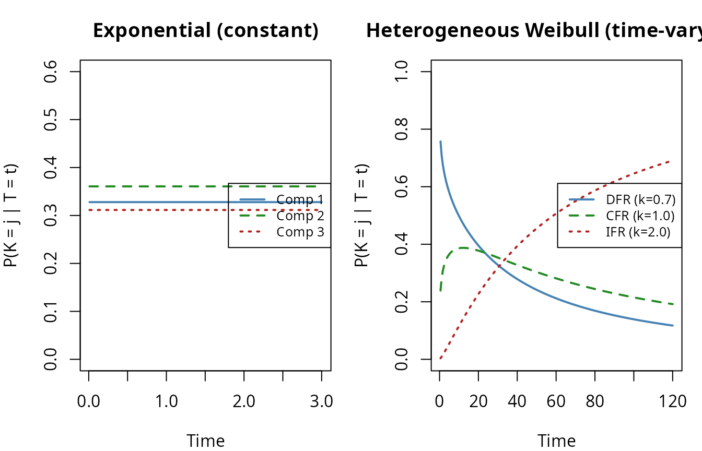
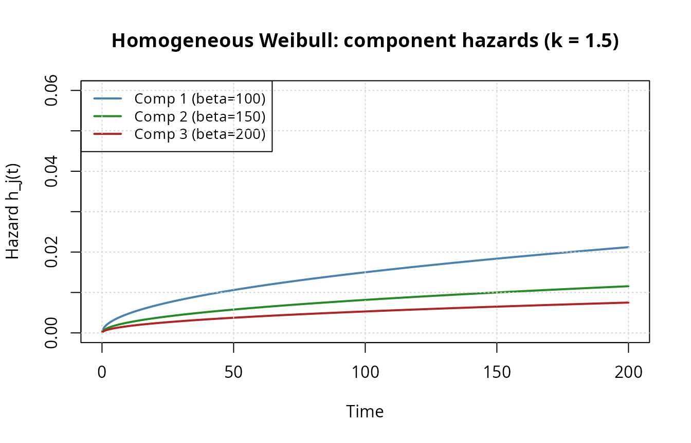
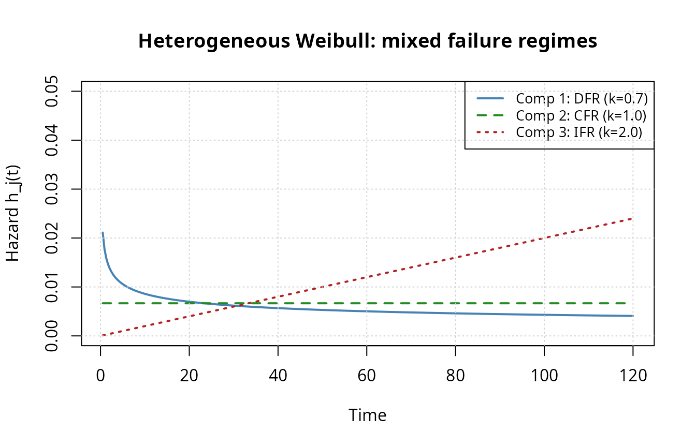
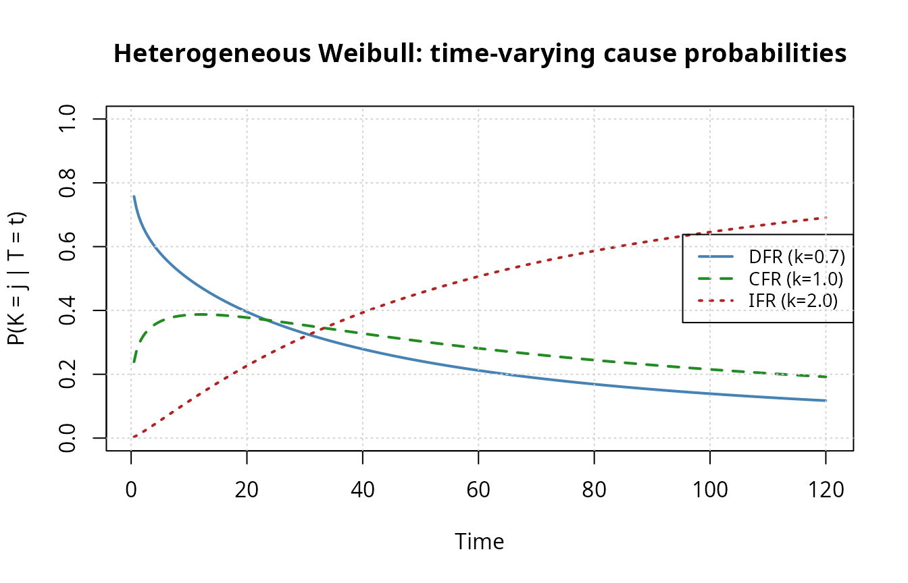

Introduction
In reliability engineering, many systems are designed as series systems: the system functions only when all of its components function. When the system fails, the failure time is observed, but the component that caused the failure is often unknown or only partially identified. This situation — where the failed component is hidden behind incomplete diagnostic information — is called masked failure cause data.
This vignette develops a self-contained mathematical framework for
estimating component lifetime parameters from masked series system data.
Everything is derived from first principles; no external paper is
required. The framework is then instantiated for three distribution
families implemented in maskedcauses:
-
Exponential (
exp_series_md_c1_c2_c3) — constant failure rates -
Homogeneous Weibull
(
wei_series_homogeneous_md_c1_c2_c3) — shared shape, individual scales -
Heterogeneous Weibull
(
wei_series_md_c1_c2_c3) — individual shapes and scales
Each section pairs the mathematical derivation with live R code that demonstrates the corresponding package functions.
Series System Model
Definition
Consider a system of independent components. The lifetime of component in the -th system is , with reliability (survival) function , pdf , and hazard function
In a series configuration (“weakest link”), the system fails as soon as any component fails:
Assumption (independence). Component lifetimes are mutually independent given the parameter vector .
Additive hazards
The system hazard is the sum of component hazards:The additive hazard decomposition is the central structural result for series systems. It means that each component contributes independently to the instantaneous system failure risk at every time .
The system pdf follows immediately:
R code: Exponential example
We demonstrate with a 3-component exponential series system. Each component has a constant hazard (failure rate) :
model_exp <- exp_series_md_c1_c2_c3()
# Component failure rates
theta_exp <- c(1.0, 1.1, 0.95)
m <- length(theta_exp)
# Extract hazard closures
h1 <- component_hazard(model_exp, 1)
h2 <- component_hazard(model_exp, 2)
h3 <- component_hazard(model_exp, 3)
t_grid <- seq(0.01, 3, length.out = 200)
h_sys <- h1(t_grid, theta_exp) + h2(t_grid, theta_exp) + h3(t_grid, theta_exp)
cat("System hazard (constant):", h_sys[1], "\n")
#> System hazard (constant): 3.05
cat("Sum of component rates: ", sum(theta_exp), "\n")
#> Sum of component rates: 3.05For exponential components, the system hazard is constant and equals the sum of the individual rates — consistent with the additive hazard theorem.
Component Cause of Failure
Definition
Let denote the index of the component that caused the -th system failure:
is a discrete random variable on that, in general, depends on the failure time .
Conditional cause probability
The probability that component caused the system failure, given that the failure occurred at time , is:Intuition. At any instant , the component with the highest hazard is the most likely cause. The cause probability is the component’s share of the total instantaneous risk — a proportional allocation.
R code: Exponential vs Weibull cause probabilities
For exponential components, the cause probability is constant in time (because all hazards are constant). For heterogeneous Weibull components, the cause probability varies with time:
# Exponential: constant cause probabilities
ccp_exp <- conditional_cause_probability(model_exp)
probs_exp <- ccp_exp(t_grid, theta_exp)
# Heterogeneous Weibull: time-varying
theta_wei <- c(0.7, 200, # DFR electronics
1.0, 150, # CFR seals
2.0, 100) # IFR bearing
model_wei <- wei_series_md_c1_c2_c3(
shapes = theta_wei[seq(1, 6, 2)],
scales = theta_wei[seq(2, 6, 2)]
)
ccp_wei <- conditional_cause_probability(model_wei)
t_wei <- seq(0.5, 120, length.out = 200)
probs_wei <- ccp_wei(t_wei, theta_wei)
par(mfrow = c(1, 2), mar = c(4, 4, 3, 1))
# Exponential
plot(t_grid, probs_exp[, 1], type = "l", col = "steelblue", lwd = 2,
ylim = c(0, 0.6), xlab = "Time", ylab = "P(K = j | T = t)",
main = "Exponential (constant)")
lines(t_grid, probs_exp[, 2], col = "forestgreen", lwd = 2, lty = 2)
lines(t_grid, probs_exp[, 3], col = "firebrick", lwd = 2, lty = 3)
legend("right", paste("Comp", 1:3),
col = c("steelblue", "forestgreen", "firebrick"),
lty = 1:3, lwd = 2, cex = 0.8)
# Heterogeneous Weibull
plot(t_wei, probs_wei[, 1], type = "l", col = "steelblue", lwd = 2,
ylim = c(0, 1), xlab = "Time", ylab = "P(K = j | T = t)",
main = "Heterogeneous Weibull (time-varying)")
lines(t_wei, probs_wei[, 2], col = "forestgreen", lwd = 2, lty = 2)
lines(t_wei, probs_wei[, 3], col = "firebrick", lwd = 2, lty = 3)
legend("right", c("DFR (k=0.7)", "CFR (k=1.0)", "IFR (k=2.0)"),
col = c("steelblue", "forestgreen", "firebrick"),
lty = 1:3, lwd = 2, cex = 0.8)
In the right panel, the DFR component (high infant-mortality hazard) dominates at early times, but the IFR component (wear-out) takes over as the system ages. This crossover cannot be captured by models that force a common shape parameter.
The Observational Model
In practice, we do not observe the latent component lifetimes directly. Instead, for each of systems we observe a triple :
- : a time value (possibly censored)
- : the observation type
- : the candidate set of possibly-failed components
Four observation types
The package supports four types, each arising from a different monitoring scheme:
| Type | What we know | Likelihood contribution | |
|---|---|---|---|
| Exact | "exact" |
System failed at | |
| Right-censored | "right" |
System survived past | |
| Left-censored | "left" |
System failed before | |
| Interval-censored | "interval" |
Failure in |
Here is the candidate-set hazard.
Masking
When , the failed component is known exactly. When , the cause of failure is masked: the diagnostic identifies a set of possible culprits but not the specific one.
Observe functors
The package provides composable observation functors for generating data under different monitoring schemes:
# Continuous monitoring with right-censoring at tau
obs_right <- observe_right_censor(tau = 5)
obs_right(3.2) # failure before tau -> exact
#> $t
#> [1] 3.2
#>
#> $omega
#> [1] "exact"
#>
#> $t_upper
#> [1] NA
obs_right(7.1) # survival past tau -> right-censored
#> $t
#> [1] 5
#>
#> $omega
#> [1] "right"
#>
#> $t_upper
#> [1] NA
# Single inspection at tau (left-censoring)
obs_left <- observe_left_censor(tau = 5)
obs_left(3.2) # failed before inspection -> left-censored
#> $t
#> [1] 5
#>
#> $omega
#> [1] "left"
#>
#> $t_upper
#> [1] NA
obs_left(7.1) # surviving at inspection -> right-censored
#> $t
#> [1] 5
#>
#> $omega
#> [1] "right"
#>
#> $t_upper
#> [1] NA
# Periodic inspections every delta time units
obs_periodic <- observe_periodic(delta = 1, tau = 5)
obs_periodic(3.2) # failure in (3, 4) -> interval-censored
#> $t
#> [1] 3
#>
#> $omega
#> [1] "interval"
#>
#> $t_upper
#> [1] 4
# Mixture: random assignment to schemes
obs_mixed <- observe_mixture(
observe_right_censor(tau = 5),
observe_left_censor(tau = 3),
observe_periodic(delta = 0.5, tau = 5),
weights = c(0.5, 0.2, 0.3)
)All rdata() methods accept an observe
argument to generate data under a specified monitoring scheme:
gen_exp <- rdata(model_exp)
set.seed(42)
df_demo <- gen_exp(theta_exp, n = 500, p = 0.3,
observe = observe_mixture(
observe_right_censor(tau = 5),
observe_left_censor(tau = 3),
weights = c(0.7, 0.3)
))
cat("Observation type counts:\n")
#> Observation type counts:
print(table(df_demo$omega))
#>
#> exact left
#> 344 156The C1–C2–C3 Likelihood
This is the core contribution: three conditions on the masking process that reduce the full joint likelihood to a tractable form that depends only on the lifetime parameters .
The three conditions
C1 (containment). The candidate set always contains the true failed component: This is a minimal accuracy requirement on the diagnostic. Without C1, the candidate set could be misleading, and the likelihood would need to model diagnostic errors explicitly.
Example: An on-board diagnostic (OBD) system reports a set of possibly-failed modules. C1 requires that the truly failed module is always in this set — the OBD may include false positives but never a false negative.
C2 (symmetric masking). The masking probability is the same for all components in the candidate set: Intuitively, the diagnostic cannot distinguish among the candidates — if it could, it would narrow the candidate set.
Example: A line-replaceable unit (LRU) grouping replaces all components in a subsystem together. The grouping is determined by physical layout, not by which component failed, so C2 holds by construction.
C3 (parameter independence). The masking probabilities do not depend on the lifetime parameters :
Example: Diagnostic accuracy depends on sensor calibration and technician skill, not on component failure rates. If the diagnostic equipment was calibrated before the study, C3 holds.
Deriving the likelihood
We derive the likelihood step by step. Consider observation with failure time and candidate set .
Step 1: Full joint density. The observed-data density includes a sum over the latent cause :
Step 2: Apply C1. Since , contributions from are zero:
Step 3: Apply C2. Symmetric masking means for all :
Step 4: Apply C3. Since does not depend on , it is a constant with respect to the parameters and drops from the maximization:
The exact-failure likelihood contribution is therefore: where is the candidate-set hazard.
Censored observations
Right-censored. The system survived past . No failure was observed, so there is no candidate set and the contribution is simply:
Left-censored. The system was found failed at inspection time , but the exact failure time is unknown. Applying C1–C3 to the integrated likelihood:
Interval-censored. The failure occurred in :
Combined log-likelihood
The full log-likelihood decomposes as: where
R code: Log-likelihood evaluation
The loglik() generic returns a closure that evaluates
this log-likelihood for any model:
ll_exp <- loglik(model_exp)
# Evaluate at true parameters on the mixed-censoring demo data
ll_val <- ll_exp(df_demo, theta_exp)
cat("Log-likelihood at true theta:", round(ll_val, 4), "\n")
#> Log-likelihood at true theta: -345.3
# Perturb parameters and compare
theta_bad <- c(2, 2, 2)
cat("Log-likelihood at wrong theta:", round(ll_exp(df_demo, theta_bad), 4), "\n")
#> Log-likelihood at wrong theta: -470.8Distribution Families
The C1–C2–C3 framework applies to any component lifetime distribution. The following table lists common families with their hazard, reliability, and pdf:
| Family | Parameters | ||
|---|---|---|---|
| Exponential | |||
| Weibull | |||
| Pareto | |||
| Log-normal | |||
| Gamma |
where . The package currently implements the first two families (Exponential and Weibull). The framework extends to any family by substituting the appropriate and into the general log-likelihood.
Worked Example: Exponential Components
The exponential model is the simplest instantiation: all hazards are constant, yielding closed-form expressions for every quantity.
Specializing the likelihood
For exponential components with and :
where and .
All four observation types have closed-form log-likelihood, score, and Hessian — the exponential model is unique in this respect.
Data generation and fitting
gen <- rdata(model)
set.seed(7231)
df <- gen(theta, n = 2000, p = 0.3,
observe = observe_right_censor(tau = 3))
cat("Observation types:\n")
#> Observation types:
print(table(df$omega))
#>
#> exact
#> 2000
solver <- fit(model)
theta0 <- rep(1, m)
estimate <- solver(df, par = theta0, method = "Nelder-Mead")
recovery <- data.frame(
Component = 1:m,
True = theta,
MLE = estimate$par,
SE = sqrt(diag(estimate$vcov)),
Rel_Error_Pct = 100 * (estimate$par - theta) / theta
)
knitr::kable(recovery, digits = 4,
caption = "Exponential MLE: parameter recovery",
col.names = c("Component", "True", "MLE", "SE", "Rel. Error %"))| Component | True | MLE | SE | Rel. Error % |
|---|---|---|---|---|
| 1 | 1.00 | 0.9824 | 0.0753 | -1.7590 |
| 2 | 1.10 | 0.9906 | 0.0713 | -9.9493 |
| 3 | 0.95 | 0.9429 | 0.0721 | -0.7451 |
| 4 | 1.15 | 1.1041 | 0.0760 | -3.9901 |
| 5 | 1.10 | 1.1903 | 0.0789 | 8.2058 |
Score and Hessian verification
The analytical score should vanish at the MLE. We also verify it against numerical differentiation:
ll_fn <- loglik(model)
scr_fn <- score(model)
hess_fn <- hess_loglik(model)
scr_at_mle <- scr_fn(df, estimate$par)
cat("Score at MLE:", round(scr_at_mle, 4), "\n")
#> Score at MLE: -0.0494 0.1326 -0.0488 0.0388 0.1303
scr_num <- numDeriv::grad(function(th) ll_fn(df, th), estimate$par)
cat("Max |analytical - numerical| score:",
formatC(max(abs(scr_at_mle - scr_num)), format = "e", digits = 2), "\n")
#> Max |analytical - numerical| score: 1.14e-06
# Hessian eigenvalues (should all be negative for concavity)
H <- hess_fn(df, estimate$par)
cat("Hessian eigenvalues:", round(eigen(H)$values, 2), "\n")
#> Hessian eigenvalues: -142.6 -153.3 -167.4 -174.5 -370.4Fisher information and confidence intervals
The observed Fisher information is . Asymptotic % Wald confidence intervals are:
alpha <- 0.05
z <- qnorm(1 - alpha / 2)
se <- sqrt(diag(estimate$vcov))
ci_df <- data.frame(
Component = 1:m,
Lower = estimate$par - z * se,
MLE = estimate$par,
Upper = estimate$par + z * se,
True = theta,
Covered = (estimate$par - z * se <= theta) & (theta <= estimate$par + z * se)
)
knitr::kable(ci_df, digits = 4,
caption = "95% Wald confidence intervals",
col.names = c("Comp.", "Lower", "MLE", "Upper", "True", "Covered?"))| Comp. | Lower | MLE | Upper | True | Covered? |
|---|---|---|---|---|---|
| 1 | 0.8348 | 0.9824 | 1.130 | 1.00 | TRUE |
| 2 | 0.8508 | 0.9906 | 1.130 | 1.10 | TRUE |
| 3 | 0.8016 | 0.9429 | 1.084 | 0.95 | TRUE |
| 4 | 0.9552 | 1.1041 | 1.253 | 1.15 | TRUE |
| 5 | 1.0357 | 1.1903 | 1.345 | 1.10 | TRUE |
Homogeneous Weibull
The homogeneous Weibull model constrains all components to share a common shape parameter , while allowing individual scale parameters . The parameter vector is .
Key properties
Property 1: The system lifetime is Weibull. Because all shapes are equal, the system reliability simplifies: where . This closure under the minimum is the structural advantage of the homogeneous model.
Property 2: Constant cause probabilities. The time dependence cancels in the hazard ratio: Just as in the exponential case, the conditional cause probability does not depend on .
Property 3: Closed-form censored contributions. Left- and interval-censored terms factor as — no numerical integration needed.
R code: Setup and hazard visualization
theta_hom <- c(k = 1.5, beta1 = 100, beta2 = 150, beta3 = 200)
k <- theta_hom[1]
scales <- theta_hom[-1]
m_hom <- length(scales)
model_hom <- wei_series_homogeneous_md_c1_c2_c3()
# System scale
beta_sys <- wei_series_system_scale(k, scales)
cat("System scale:", round(beta_sys, 2), "\n")
#> System scale: 65.24
# Plot component hazards
t_grid <- seq(0.1, 200, length.out = 300)
cols <- c("steelblue", "forestgreen", "firebrick")
plot(NULL, xlim = c(0, 200), ylim = c(0, 0.06),
xlab = "Time", ylab = "Hazard h_j(t)",
main = "Homogeneous Weibull: component hazards (k = 1.5)")
for (j in seq_len(m_hom)) {
h_j <- component_hazard(model_hom, j)
lines(t_grid, h_j(t_grid, theta_hom), col = cols[j], lwd = 2)
}
legend("topleft", paste0("Comp ", 1:m_hom, " (beta=", scales, ")"),
col = cols, lwd = 2, cex = 0.9)
grid()
All hazards are increasing (), sharing the same shape but differing in magnitude. Component 1 (smallest ) dominates at all times.
Cause probabilities
# Analytical cause weights
w <- scales^(-k) / sum(scales^(-k))
names(w) <- paste0("Component ", 1:m_hom)
cat("Time-invariant cause weights:\n")
#> Time-invariant cause weights:
print(round(w, 4))
#> Component 1 Component 2 Component 3
#> 0.5269 0.2868 0.1863
# Verify with package function (pass scales so model knows m)
ccp_fn <- conditional_cause_probability(
wei_series_homogeneous_md_c1_c2_c3(scales = scales)
)
probs <- ccp_fn(c(10, 50, 100, 150), theta_hom)
knitr::kable(probs, digits = 4,
caption = "P(K=j | T=t) at four time points (should be constant)",
col.names = paste0("Comp ", 1:m_hom))| Comp 1 | Comp 2 | Comp 3 |
|---|---|---|
| 0.5269 | 0.2868 | 0.1863 |
| 0.5269 | 0.2868 | 0.1863 |
| 0.5269 | 0.2868 | 0.1863 |
| 0.5269 | 0.2868 | 0.1863 |
Data generation and MLE
gen_hom <- rdata(model_hom)
set.seed(2024)
df_hom <- gen_hom(theta_hom, n = 500, p = 0.3,
observe = observe_periodic(delta = 20, tau = 250))
cat("Observation types:\n")
#> Observation types:
print(table(df_hom$omega))
#>
#> interval
#> 500
solver_hom <- fit(model_hom)
theta0_hom <- c(1.2, 110, 140, 180)
est_hom <- solver_hom(df_hom, par = theta0_hom, method = "Nelder-Mead")
recovery_hom <- data.frame(
Parameter = c("k", paste0("beta_", 1:m_hom)),
True = theta_hom,
MLE = est_hom$par,
SE = sqrt(diag(est_hom$vcov)),
Rel_Error_Pct = 100 * (est_hom$par - theta_hom) / theta_hom
)
knitr::kable(recovery_hom, digits = 3,
caption = paste0("Homogeneous Weibull MLE (n = 500)"),
col.names = c("Parameter", "True", "MLE", "SE", "Rel. Error %"))| Parameter | True | MLE | SE | Rel. Error % | |
|---|---|---|---|---|---|
| k | k | 1.5 | 1.48 | 0.054 | -1.353 |
| beta1 | beta_1 | 100.0 | 100.94 | 4.629 | 0.938 |
| beta2 | beta_2 | 150.0 | 149.80 | 10.157 | -0.131 |
| beta3 | beta_3 | 200.0 | 247.39 | 27.542 | 23.696 |
Heterogeneous Weibull
The heterogeneous Weibull model allows each component to have its own shape and scale , giving a -dimensional parameter vector .
Differences from the homogeneous model
| Property | Homogeneous | Heterogeneous |
|---|---|---|
| Parameters | ||
| System lifetime | Weibull(, ) | Not Weibull |
| Cause probabilities | Constant in | Time-varying |
| Left/interval likelihood | Closed form | Numerical integration |
The additional flexibility comes at a cost: the system lifetime
is no longer Weibull when shapes differ, and left-censored or
interval-censored likelihood contributions require numerical integration
(stats::integrate).
R code: Mixed failure regimes
We construct a 3-component system with DFR (infant mortality), CFR (random), and IFR (wear-out) components:
theta_het <- c(0.7, 200, # DFR electronics
1.0, 150, # CFR seals
2.0, 100) # IFR bearing
m_het <- length(theta_het) / 2
model_het <- wei_series_md_c1_c2_c3(
shapes = theta_het[seq(1, 6, 2)],
scales = theta_het[seq(2, 6, 2)]
)
# Component hazard functions
t_het <- seq(0.5, 120, length.out = 300)
h_fns <- lapply(1:m_het, function(j) component_hazard(model_het, j))
h_vals <- sapply(h_fns, function(hf) hf(t_het, theta_het))
plot(t_het, h_vals[, 1], type = "l", col = "steelblue", lwd = 2,
ylim = c(0, 0.05),
xlab = "Time", ylab = "Hazard h_j(t)",
main = "Heterogeneous Weibull: mixed failure regimes")
lines(t_het, h_vals[, 2], col = "forestgreen", lwd = 2, lty = 2)
lines(t_het, h_vals[, 3], col = "firebrick", lwd = 2, lty = 3)
legend("topright",
c("Comp 1: DFR (k=0.7)", "Comp 2: CFR (k=1.0)", "Comp 3: IFR (k=2.0)"),
col = c("steelblue", "forestgreen", "firebrick"),
lty = 1:3, lwd = 2, cex = 0.85)
grid()
Time-varying cause probabilities
ccp_het <- conditional_cause_probability(model_het)
probs_het <- ccp_het(t_het, theta_het)
plot(t_het, probs_het[, 1], type = "l", col = "steelblue", lwd = 2,
ylim = c(0, 1), xlab = "Time", ylab = "P(K = j | T = t)",
main = "Heterogeneous Weibull: time-varying cause probabilities")
lines(t_het, probs_het[, 2], col = "forestgreen", lwd = 2, lty = 2)
lines(t_het, probs_het[, 3], col = "firebrick", lwd = 2, lty = 3)
legend("right",
c("DFR (k=0.7)", "CFR (k=1.0)", "IFR (k=2.0)"),
col = c("steelblue", "forestgreen", "firebrick"),
lty = 1:3, lwd = 2, cex = 0.85)
grid()
The crossover pattern is characteristic of bathtub-curve behavior at the system level: early failures are dominated by infant-mortality mechanisms, while late failures are dominated by wear-out.
Data generation and MLE
gen_het <- rdata(model_het)
set.seed(7231)
df_het <- gen_het(theta_het, n = 300, tau = 120, p = 0.3,
observe = observe_right_censor(tau = 120))
cat("Observation types:\n")
#> Observation types:
print(table(df_het$omega))
#>
#> exact right
#> 286 14We use right-censoring for speed — exact and right-censored observations have closed-form likelihood contributions. Left- and interval-censored observations require numerical integration per observation per optimization iteration.
solver_het <- fit(model_het)
theta0_het <- rep(c(1, 150), m_het)
est_het <- solver_het(df_het, par = theta0_het, method = "Nelder-Mead")
par_names <- paste0(
rep(c("k", "beta"), m_het), "_",
rep(1:m_het, each = 2)
)
recovery_het <- data.frame(
Parameter = par_names,
True = theta_het,
MLE = est_het$par,
SE = sqrt(diag(est_het$vcov)),
Rel_Error_Pct = 100 * (est_het$par - theta_het) / theta_het
)
knitr::kable(recovery_het, digits = 3,
caption = paste0("Heterogeneous Weibull MLE (n = 300)"),
col.names = c("Parameter", "True", "MLE", "SE", "Rel. Error %"))| Parameter | True | MLE | SE | Rel. Error % |
|---|---|---|---|---|
| k_1 | 0.7 | 0.744 | 0.062 | 6.233 |
| beta_1 | 200.0 | 145.388 | 19.797 | -27.306 |
| k_2 | 1.0 | 1.137 | 0.126 | 13.668 |
| beta_2 | 150.0 | 150.563 | 21.610 | 0.376 |
| k_3 | 2.0 | 2.341 | 0.220 | 17.071 |
| beta_3 | 100.0 | 102.378 | 5.510 | 2.378 |
Model comparison: heterogeneous vs homogeneous
When the true DGP has heterogeneous shapes, the homogeneous model is misspecified. We compare the two on the same data:
# Refit on larger dataset for sharper comparison
set.seed(999)
df_comp <- gen_het(theta_het, n = 800, tau = 150, p = 0.2,
observe = observe_right_censor(tau = 150))
# Heterogeneous (6 params)
fit_het <- solver_het(df_comp, par = theta0_het, method = "Nelder-Mead")
# Homogeneous (4 params)
model_hom2 <- wei_series_homogeneous_md_c1_c2_c3()
solver_hom2 <- fit(model_hom2)
fit_hom2 <- solver_hom2(df_comp, par = c(1, 150, 150, 150),
method = "Nelder-Mead")
# Likelihood ratio test
LRT <- 2 * (fit_het$loglik - fit_hom2$loglik)
df_lrt <- 6 - 4
p_val <- pchisq(LRT, df = df_lrt, lower.tail = FALSE)
comp_df <- data.frame(
Model = c("Heterogeneous (2m = 6)", "Homogeneous (m+1 = 4)"),
Params = c(6, 4),
LogLik = c(fit_het$loglik, fit_hom2$loglik),
AIC = c(-2 * fit_het$loglik + 2 * 6, -2 * fit_hom2$loglik + 2 * 4)
)
knitr::kable(comp_df, digits = 2,
caption = "Model comparison",
col.names = c("Model", "# Params", "Log-Lik", "AIC"))| Model | # Params | Log-Lik | AIC |
|---|---|---|---|
| Heterogeneous (2m = 6) | 6 | -4373 | 8759 |
| Homogeneous (m+1 = 4) | 4 | -4451 | 8911 |
cat(sprintf("\nLRT statistic: %.2f (df = %d, p = %.4f)\n",
LRT, df_lrt, p_val))
#>
#> LRT statistic: 155.88 (df = 2, p = 0.0000)Both AIC and the likelihood ratio test favor the heterogeneous model when the true DGP has unequal shapes. The common-shape estimate from the homogeneous fit represents a compromise value between 0.7, 1.0, and 2.0, leading to biased estimates of the scale parameters.
Monte Carlo Assessment
We briefly assess finite-sample properties of the MLE for each model
family. Full Monte Carlo studies with sensitivity analyses are provided
in the dedicated vignettes (exponential_series,
weibull_series,
weibull_homogeneous_series).
set.seed(42)
B <- 100
alpha <- 0.05
# Exponential: 5 components
theta_mc_exp <- c(1.0, 1.1, 0.95, 1.15, 1.1)
m_mc_exp <- length(theta_mc_exp)
n_mc <- 1000
model_mc_exp <- exp_series_md_c1_c2_c3()
gen_mc_exp <- rdata(model_mc_exp)
solver_mc_exp <- fit(model_mc_exp)
est_exp <- matrix(NA, B, m_mc_exp)
conv_exp <- logical(B)
for (b in seq_len(B)) {
df_b <- gen_mc_exp(theta_mc_exp, n = n_mc, p = 0.3,
observe = observe_right_censor(tau = 3))
tryCatch({
fit_b <- solver_mc_exp(df_b, par = rep(1, m_mc_exp),
method = "Nelder-Mead")
est_exp[b, ] <- fit_b$par
conv_exp[b] <- fit_b$converged
}, error = function(e) conv_exp[b] <<- FALSE)
}
# Homogeneous Weibull: 3 components
theta_mc_hom <- c(1.5, 100, 150, 200)
m_mc_hom <- 3
model_mc_hom <- wei_series_homogeneous_md_c1_c2_c3()
gen_mc_hom <- rdata(model_mc_hom)
solver_mc_hom <- fit(model_mc_hom)
beta_sys_mc <- wei_series_system_scale(theta_mc_hom[1], theta_mc_hom[-1])
tau_mc_hom <- qweibull(0.75, shape = theta_mc_hom[1], scale = beta_sys_mc)
est_hom <- matrix(NA, B, m_mc_hom + 1)
conv_hom <- logical(B)
for (b in seq_len(B)) {
df_b <- gen_mc_hom(theta_mc_hom, n = n_mc, p = 0.3,
observe = observe_right_censor(tau = tau_mc_hom))
tryCatch({
fit_b <- solver_mc_hom(df_b, par = c(1, 120, 120, 120),
method = "L-BFGS-B",
lower = rep(1e-6, m_mc_hom + 1))
est_hom[b, ] <- fit_b$par
conv_hom[b] <- fit_b$converged
}, error = function(e) conv_hom[b] <<- FALSE)
}
# Heterogeneous Weibull: 3 components
theta_mc_het <- c(0.8, 150, 1.5, 120, 2.0, 100)
m_mc_het <- 3
model_mc_het <- wei_series_md_c1_c2_c3()
gen_mc_het <- rdata(model_mc_het)
solver_mc_het <- fit(model_mc_het)
est_het <- matrix(NA, B, 2 * m_mc_het)
conv_het <- logical(B)
for (b in seq_len(B)) {
df_b <- gen_mc_het(theta_mc_het, n = n_mc, tau = 200, p = 0.2,
observe = observe_right_censor(tau = 200))
tryCatch({
fit_b <- solver_mc_het(df_b, par = rep(c(1, 130), m_mc_het),
method = "L-BFGS-B",
lower = rep(1e-6, 2 * m_mc_het))
est_het[b, ] <- fit_b$par
conv_het[b] <- fit_b$converged
}, error = function(e) conv_het[b] <<- FALSE)
}
mc_summary <- function(estimates, converged, theta, par_names) {
valid <- converged & !is.na(estimates[, 1])
ev <- estimates[valid, , drop = FALSE]
bias <- colMeans(ev) - theta
rmse <- sqrt(bias^2 + apply(ev, 2, var))
data.frame(
Parameter = par_names,
True = theta,
Mean_Est = colMeans(ev),
Bias = bias,
RMSE = rmse,
Rel_Bias_Pct = 100 * bias / theta,
stringsAsFactors = FALSE
)
}
# Exponential
cat("=== Exponential ===\n")
#> === Exponential ===
cat("Convergence:", mean(conv_exp), "\n\n")
#> Convergence: 0.99
exp_table <- mc_summary(est_exp, conv_exp, theta_mc_exp,
paste0("lambda_", 1:m_mc_exp))
knitr::kable(exp_table, digits = 4,
caption = "Exponential MC (B=100, n=1000)",
col.names = c("Parameter", "True", "Mean Est.", "Bias",
"RMSE", "Rel. Bias %"))| Parameter | True | Mean Est. | Bias | RMSE | Rel. Bias % |
|---|---|---|---|---|---|
| lambda_1 | 1.00 | 0.9906 | -0.0094 | 0.0968 | -0.9366 |
| lambda_2 | 1.10 | 1.1103 | 0.0103 | 0.1183 | 0.9401 |
| lambda_3 | 0.95 | 0.9688 | 0.0188 | 0.1071 | 1.9777 |
| lambda_4 | 1.15 | 1.1424 | -0.0076 | 0.1062 | -0.6650 |
| lambda_5 | 1.10 | 1.1039 | 0.0039 | 0.1065 | 0.3550 |
cat("\n=== Homogeneous Weibull ===\n")
#>
#> === Homogeneous Weibull ===
cat("Convergence:", mean(conv_hom), "\n\n")
#> Convergence: 0.8
hom_table <- mc_summary(est_hom, conv_hom, theta_mc_hom,
c("k", paste0("beta_", 1:m_mc_hom)))
knitr::kable(hom_table, digits = 4,
caption = "Homogeneous Weibull MC (B=100, n=1000)",
col.names = c("Parameter", "True", "Mean Est.", "Bias",
"RMSE", "Rel. Bias %"))| Parameter | True | Mean Est. | Bias | RMSE | Rel. Bias % |
|---|---|---|---|---|---|
| k | 1.5 | 1.496 | -0.0036 | 0.0507 | -0.2375 |
| beta_1 | 100.0 | 100.242 | 0.2423 | 3.9623 | 0.2423 |
| beta_2 | 150.0 | 151.721 | 1.7208 | 9.2254 | 1.1472 |
| beta_3 | 200.0 | 201.174 | 1.1742 | 17.2010 | 0.5871 |
cat("\n=== Heterogeneous Weibull ===\n")
#>
#> === Heterogeneous Weibull ===
cat("Convergence:", mean(conv_het), "\n\n")
#> Convergence: 0.78
het_names <- paste0(rep(c("k", "beta"), m_mc_het), "_",
rep(1:m_mc_het, each = 2))
het_table <- mc_summary(est_het, conv_het, theta_mc_het, het_names)
knitr::kable(het_table, digits = 4,
caption = "Heterogeneous Weibull MC (B=100, n=1000)",
col.names = c("Parameter", "True", "Mean Est.", "Bias",
"RMSE", "Rel. Bias %"))| Parameter | True | Mean Est. | Bias | RMSE | Rel. Bias % |
|---|---|---|---|---|---|
| k_1 | 0.8 | 0.8012 | 0.0012 | 0.0351 | 0.1440 |
| beta_1 | 150.0 | 148.7311 | -1.2689 | 12.2943 | -0.8460 |
| k_2 | 1.5 | 1.5145 | 0.0145 | 0.0821 | 0.9648 |
| beta_2 | 120.0 | 120.9411 | 0.9411 | 6.0519 | 0.7842 |
| k_3 | 2.0 | 1.9917 | -0.0083 | 0.0936 | -0.4159 |
| beta_3 | 100.0 | 100.1777 | 0.1777 | 3.2279 | 0.1777 |
Practical Considerations
Starting values. For the exponential model, starting at for all generally works. For Weibull models, start with shapes near 1 (the exponential case) and scales estimated from sample quantiles. An exponential fit can provide good initial scale values via .
Identifiability. If two components are always masked together (i.e., they appear in every candidate set as a pair), their individual parameters are not identifiable — only their sum (exponential) or combined contribution (Weibull) can be estimated. This is a structural limitation of the observational design, not the estimation method.
Computational cost. The three models differ substantially in computation time:
- Exponential: per log-likelihood evaluation. All four observation types have closed-form loglik, score, and Hessian.
-
Homogeneous Weibull:
for loglik (closed form for all types). Score uses
numDeriv::gradfor left/interval observations. -
Heterogeneous Weibull:
for closed-form terms, plus
calls to
stats::integratefor numerical integration terms.
For datasets with many left- or interval-censored observations under the heterogeneous model, each optimization iteration involves hundreds of numerical integrations. Strategies to manage this include using the homogeneous model as a warm start, or extending the study period to convert more observations to exact/right-censored.
Bootstrap confidence intervals. As an alternative to asymptotic Wald intervals (based on the observed Fisher information), parametric bootstrap confidence intervals can be constructed by repeatedly simulating from the fitted model and refitting. This is more computationally expensive but avoids reliance on large-sample normality approximations, which can be inaccurate when the sample size is small or the likelihood surface is asymmetric.